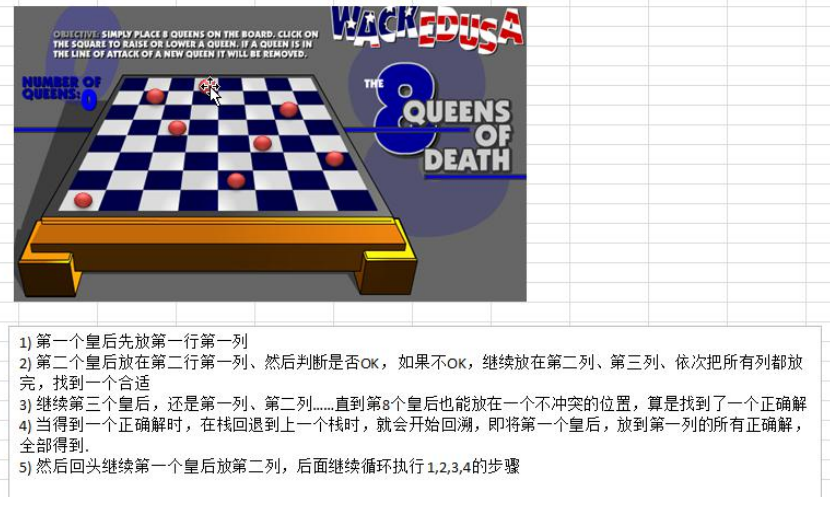

八皇后问题算法思路分析
- 第一个皇后先放第一行第一列
- 第二个皇后放在第二行第一列、然后判断是否 OK， 如果不 OK，继续放在第二列、第三列、依次把所有列都
放完，找到一个合适
- 继续第三个皇后，还是第一列、第二列……直到第 8 个皇后也能放在一个不冲突的位置，算是找到了一个正确
解
- 当得到一个正确解时，在栈回退到上一个栈时，就会开始回溯，即将第一个皇后，放到第一列的所有正确解，全部得到.
- 然后回头继续第一个皇后放第二列，后面继续循环执行 1,2,3,4 的步骤
说明：
理论上应该创建一个二维数组来表示棋盘，但是实际上可以通过算法，用一个一维数组即可解决问题. arr[8] =
{0 , 4, 7, 5, 2, 6, 1, 3} //对应 arr 下标 表示第几行，即第几个皇后，arr[i] = val , val 表示第 i+1 个皇后，放在第 i+1
行的第 val+1 列
示意图：

代码实现
1
2
3
4
5
6
7
8
9
10
11
12
13
14
15
16
17
18
19
20
21
22
23
24
25
26
27
28
29
30
31
32
33
34
35
36
37
38
39
40
41
42
43
44
45
46
47
48
49
50
51
52
53
54
55
56
57
58
59
60
61
62
63
64
65
66
67
68
69
70
| public class Queen8 {
int max = 8;
int[] array = new int[max];
static int count = 0;
static int judgeCount = 0;
public static void main(String[] args) {
Queen8 Queen8 = new Queen8();
Queen8.check(0);
System.out.printf("一共有%d解法", count);
System.out.printf("一共判断冲突的次数%d次", judgeCount);
}
private void check(int n) {
if (n == max) {
print();
return;
}
for (int i = 0; i < max; i++) {
array[n] = i;
if (judge(n)) {
check(n + 1);
}
}
}
private boolean judge(int n) {
judgeCount++;
for (int i = 0; i < n; i++) {
if (array[i] == array[n] || Math.abs(n-i)==Math.abs(array[n]-array[i])) {
return false;
}
}
return true;
}
private void print() {
count++;
for (int i = 0; i < array.length; i++) {
System.out.print(array[i] + " ");
}
System.out.println();
}
}
|